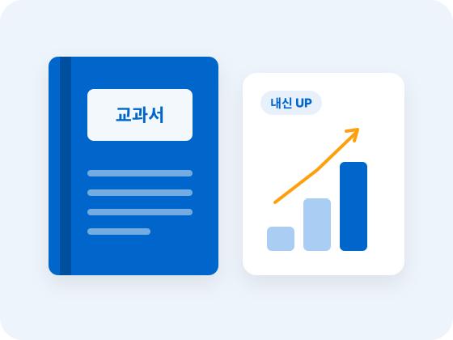

STEP 4
중등부
읽기를 학습과 성적으로 연결하는 단계
수업 시스템
아이의 성장에 따라
아이의 성장에 따라
읽기 교육도 달라져야 합니다.
나비독서는 아이의 학년과 읽기 수준에 맞춰 4단계로 수업합니다.
STEP 4 · 이 단계의 목표
교과서와 학습 자료를 정확하게 읽고
교과서와 학습 자료를 정확하게 읽고
핵심을 파악하여 내신 학습에 적용합니다.
이 단계에서 길러지는 힘
- 교과서를 정확하게 읽고 핵심 개념을 잡는 힘
- 긴 지문을 빠르고 정확하게 처리하는 힘
- 논 · 서술형 답안을 쓰는 표현력

PROGRAM
중등부
중등부
핵심 프로그램
- MDR · SDR
- 정확
- 구조
- 사고
- 유창
- 교과 적용
- 논 · 서술형
- 내신
정확 · 구조 읽기
MDR · SDR로 교과서와 지문을 정확하게 읽고 구조를 파악합니다.
사고 · 유창 읽기
추론 · 판단하며 읽고, 긴 글도 빠르고 정확하게 이해합니다.
교과 적용
핵심 개념과 내용 구조를 정리해 교과 학습에 바로 활용합니다.
논 · 서술형 · 내신
이해한 내용을 근거와 함께 표현해 내신 성적으로 연결합니다.
TEXTBOOK
수업 교재
나비독서 + 현대소설 + 철학과 논리 + 역사와 사회 + 비문학 정독 + 교과서 회독

함께 사용하는 교재
- 문학현대소설
- 사고력철학과 논리
- 교과 배경지식역사와 사회
- 독해비문학 정독
- 내신교과서 회독
RECOMMEND